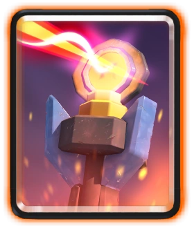

How To Counter Evo Royal Giant
While base royal giant can be countered by Skarmy, evo is a different story. The recoil
damage can kill skeletons. Instead, you can use towers like the Inferno tower, which are great against
tanks. Inferno dragon plus cannon also works well. You almost always need a building to distract this card
on defense.
